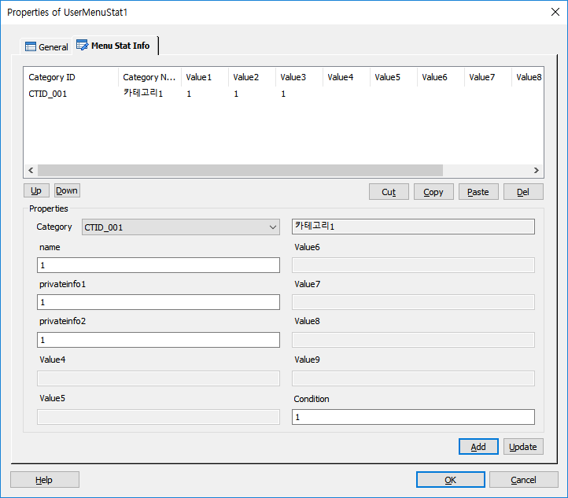

사용자 메뉴 통계를 작성할 수 있는 아이템입니다. DefineMenuStat에 정의된 메뉴 개수(최대 9개) 만큼의 입력 창에 값을 입력 합니다.
ICON

PROPERTIES
 Menu Stat Info
Menu Stat Info

Category : DefineMenuStat의 카테고리를 선택 합니다.
Category Name : 선택한 카테고리 이름입니다.
Value1 ~ Value9 : DefineMenuStat에 정의된 사용자 메뉴통계 이름이 출력된다.(정의되지 않은 항목은 Valuex라고 표시 된다.)
Condition : 아이템 실행 조건을 지정 합니다.
Up Button : 선택한 리스트 아이템을 위로 이동 합니다.
Down Button : 선택한 리스트 아이템을 아래로 이동합니다.
Cut Button : 선택한 리스트 아이템을 잘라 냅니다.(Ctrl+X)
Copy Button : 선택한 리스트 아이템을 복사 합니다.(Ctrl+C)
Paste Button : 복사한 리스트 아이템을 붙여넣습니다.(Ctrl+V)
Del Button : 선택한 리스트 아이템을 제거 합니다.
Add Button : 작성한 사용자 통계를 리스트에 추가 합니다.
Update Button : 선택한 리스트 아이템을 갱신 합니다.
RESULT
None.
RELATED